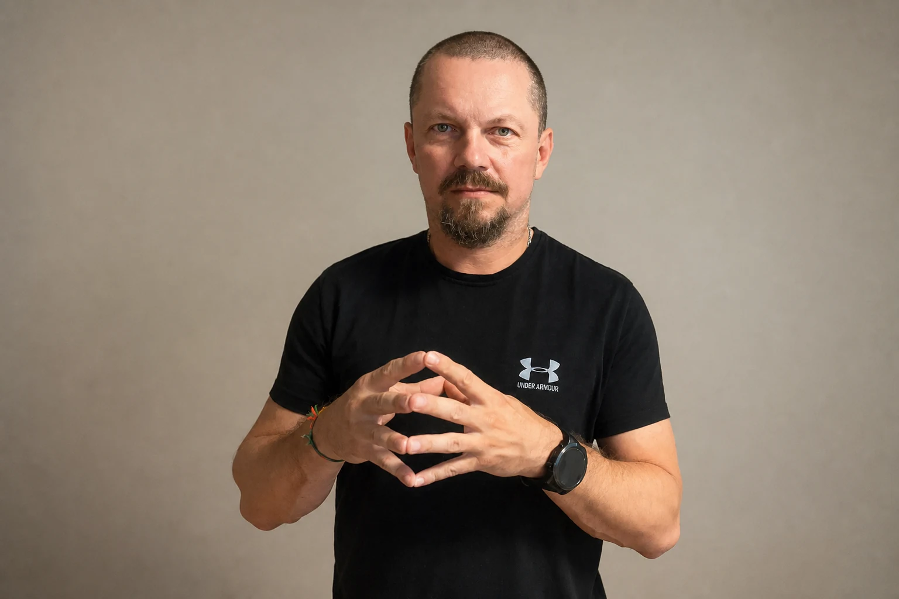
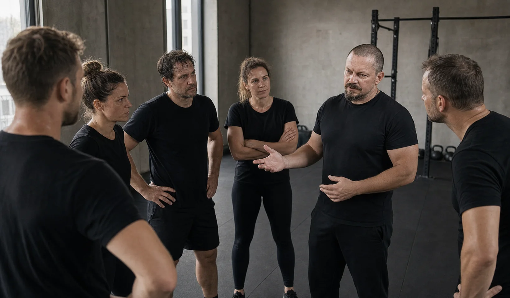
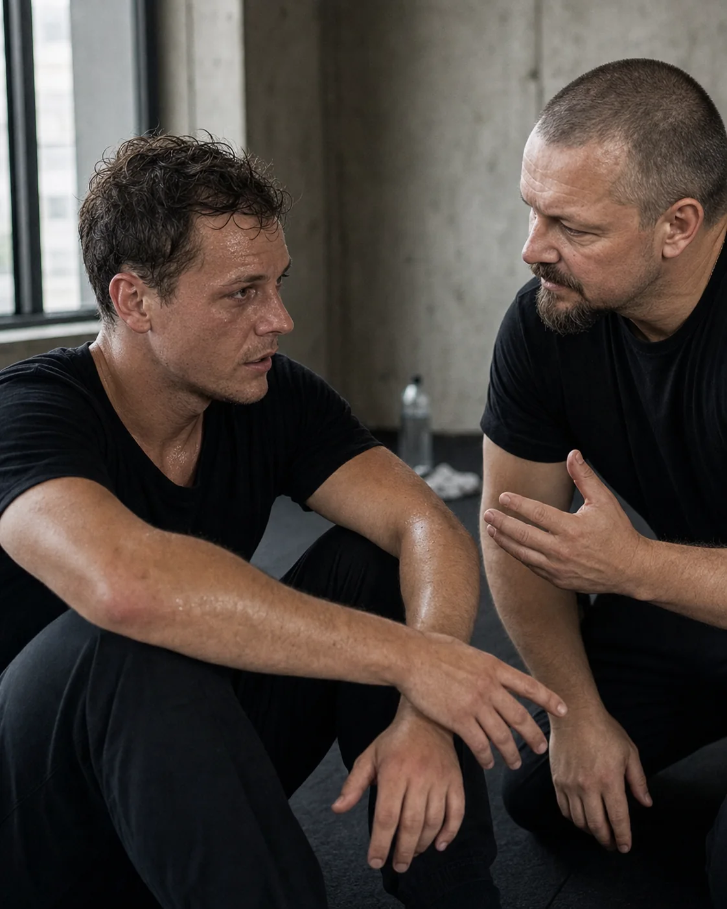

01
Vystavíme vás řízené zátěži
Bezpečně nasimulujeme reálnou zátěž, ve které se projeví vaše skutečné návyky a automatické reakce.
Psychofyzický trénink lidského jednání pod tlakem
V bezpečně řízené zátěži poznáte, co s vámi tlak dělá, a nacvičíte reakci, o kterou se můžete opřít v konfliktu, náročném rozhodnutí i rizikové situaci.
Praha · 21. 11. 2026 · jednodenní praktický trénink

Proč pod tlakem reagujeme jinak
Když přijde tlak, vaše schopnosti nezmizí. Jen k nim máte, díky psychofyzické reakci, horší přístup. Tlak může zúžit pozornost, zrychlit tělesnou reakci a zhoršit přístup ke slovům nebo známému postupu. Resilium trénuje okamžik, ve kterém lze znovu získat prostor pro vlastní volbu.
Jak trénink funguje
Znalosti v krizové situaci nestačí. Rozhoduje fyzický nácvik. Teoretické návody selhávají ve chvíli, kdy tělo zaplaví stresový hormon. V Resiliu propojujeme fyzickou reakci, pozornost a rozhodování do jednoho funkčního celku.
Řízená zátěž není cílem ani testem odolnosti. Je účinnou metodou, díky které poznáte vlastní reakci a nacvičíte si, jak příště jednat s klidem a efektivně.

Bezpečně nasimulujeme reálnou zátěž, ve které se projeví vaše skutečné návyky a automatické reakce.
Všimnete si, že rychleji dýcháte, snižuje se vaše pozornost nebo se mění hlas, tempo či postoj.
Nacvičíte a osvojíte si techniky regulace stresové situace dřív, než vaše tělo ovládnou zautomatizované reakce.
Upevníme nové a účinnější vzorce jednání tak, aby byly přirozeně dostupné v běžném životě i práci.
Praktický rozdíl
Resilium teorii nenahrazuje. Přidává bezpečně řízený nácvik chvíle, ve které má být známý postup skutečně použit.
Přednášejí teorii a poučky, jak byste se měli v konfliktu chovat.
Trénujeme reálné situace na vlastní kůži, abyste si správný postup fyzicky zažili.
Rozebírají modelové příklady u stolu v klidové zóně.
Vytváříme dávkovanou zátěž, ve které odhalíte své automatické tělesné signály.
Učí vás, co říct, ale ignorují stav vaší nervové soustavy.
Pracujeme s dechem, hlasem, pozorností, postojem, hranicemi a prostorem.
Kdy trénink dává smysl
Trénink je určený pro chvíle, kdy víte, co byste chtěli udělat, ale tlak vám zúží možnosti. Neučíte se univerzální odpověď. Nacvičujete, jak si v konkrétní situaci udržet přístup k vlastnímu úsudku a volbě.
Víte, co chcete říct, ale začnete se obhajovat, ustoupíte nebo vám dojdou slova. Trénujete, jak zachytit první reakci a znovu se opřít o svůj záměr.
Řeknete ano, i když chcete říct ne, nebo hranici sdělíte prudčeji, než jste zamýšleli. Nacvičíte si pevnou a srozumitelnou reakci bez zbytečné eskalace.
Pozornost se zúží a první řešení začne vypadat jako jediné. Trénujete, jak si vytvořit prostor, obnovit přehled a zvolit další krok.
Zamrznete, přehlédnete varovný signál nebo začnete jednat impulzivně. Nacvičíte si, jak se zorientovat dřív, než automatická reakce převezme řízení.
O Resiliu
Resilium vzniklo z jednoduché otázky: proč lidé v klidu vědí, co chtějí udělat, ale pod tlakem se ke svým slovům, zkušenostem a úsudku dostávají obtížněji?
Odpovědí je praktický trénink, který propojuje vnímání tělesné reakce, práci s pozorností, dechem, hlasem, hranicemi a prostorem s opakovaným nácvikem konkrétního jednání. Resilium neučí jednu správnou odpověď. Pomáhá účastníkům rozpoznat vlastní automatickou reakci a získat více možností, jak v náročné situaci jednat.

Radim Končítek se více než třicet let věnuje osobní bezpečnosti, sebeobraně a vedení praktického nácviku pod zátěží. Tato zkušenost je jedním z východisek Resilia.
Resilium však není kurzem sebeobrany. Převádí práci s reakcí pod tlakem do situací, ve kterých rozhodují komunikace, pozornost, hranice, úsudek a volba dalšího jednání.
Radim vede tréninky osobně. Zátěž vytváří postupně a s ohledem na možnosti účastníků. Po každé zkušenosti následuje reflexe a další nácvik v bezpečném a respektujícím prostředí.
Resilium je vlastní tréninkový rámec vycházející z poznatků o reakcích člověka na akutní tlak a z dlouhodobé praktické zkušenosti s nácvikem náročných situací.
Není terapií, psychologickou diagnostikou, testem odolnosti ani kurzem fyzického boje. Neslibuje absolutní kontrolu nad emocemi. Cílem je lépe rozpoznat vlastní reakci a nacvičit si, jak si zachovat více prostoru pro vědomé jednání.
Poptávka a doporučení programu
Napište nám stručně, co se ve firmě nebo týmu opakuje. Doporučíme vhodný formát tréninku a ozveme se s návrhem dalšího kroku.
Nejčastější otázky
Stručně a bez zjednodušujících slibů: co Resilium trénuje, z čeho vychází a kde jsou hranice jeho použití.
Resilium není jen školení komunikace ani obecná přednáška o stresu. Propojuje rozpoznání vlastní reakce, práci s pozorností a aktivací těla, rozhodování, komunikaci a konkrétní další krok. Scénáře se vztahují k situacím, které daný člověk, lídr nebo tým skutečně řeší.
Výzkum podporuje výchozí mechanismy, se kterými Resilium pracuje: akutní stres může zhoršovat pracovní paměť a kognitivní flexibilitu a ovlivňovat rozhodování. Dopad není u všech lidí ani úkolů stejný. Výzkum stresového nácviku podporuje princip postupné přípravy na výkon pod zátěží; není však přímým ověřením programu Resilium. Resilium je vlastní tréninkový rámec a neprezentujeme jej jako klinicky validovanou léčebnou metodu. Vybrané odborné zdroje: Shields, Sazma & Yonelinas (2016), Starcke & Brand (2012) a Saunders et al. (1996).
Cílem není boj, šok ani fyzické vyčerpání. Náročnost se zvyšuje postupně, lektor sleduje reakce účastníků a cvičení přizpůsobuje možnostem skupiny. Řízená zátěž je prostředek k rozpoznání a nácviku reakce, nikoli atrakce nebo test odolnosti.
Nejprve popíšete konkrétní situace, cílové role a očekávanou změnu v praxi. Následuje krátká konzultace a návrh scénářů, rozsahu, bezpečnostních pravidel a způsobu vyhodnocení. Teprve poté vzniká konkrétní nabídka.